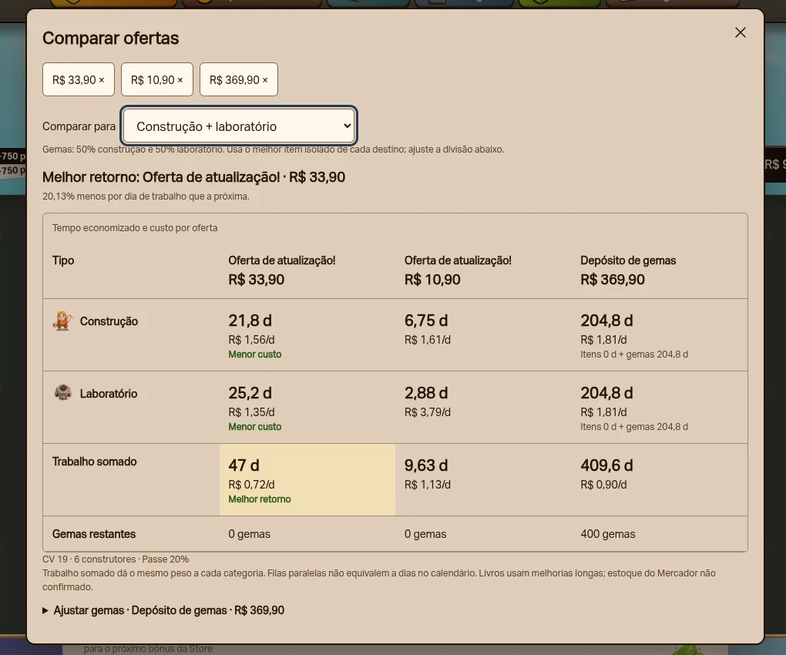

Extensão para a Supercell Store
Compare ofertas de Clash of Clans pelo tempo de melhoria que elas podem economizar na sua vila.
Abrir calculadoraOfertas na Supercell Store
A extensão adiciona uma faixa a cada oferta reconhecida. Clique na faixa para ver o custo por hora ou conferir quais itens entraram no cálculo.
Entender os tiersCompare até três pacotes
Escolha o foco da análise e veja quanto paga por hora economizada em construção, heróis, laboratório ou mascotes.
